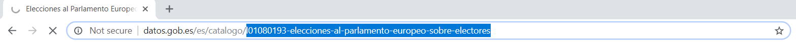

Description
The goal of opendataes is to interact and download data from the https://datos.gob.es API.
This API is an effort from the Spanish government to unify all data sources from different provinces and regions into a single API. The API includes data from entities such as universities, small and big city halls, autonomous communities and Spain as a whole. With over 19,000 datasets in topics all the way from the number of parking spaces in a given city to the levels of air pollution at the regional level (at the moment of writing, October 2018), the API keeps growing with a rich set of public information that researchers and data analysts can use for their own research.
Because aggregating data from all these different sources poses a challenge for reading different formats and harmonizing different datasets, opendataes is very conservative in what it can read. Once you install the package, you can print the contents of permitted_formats and available_publishers to explore which formats and publishers are available.
Collaboration
This package is meant to be developed by the R community and it is completely open to new pull requests, ideas and collaborations. The idea of the package is to include as many formats and publishers as possible by bringing the support and knowledge of other developers If you’re interested in collaborating, please check the vignettes as the package is described in detail there and file a pull request.
Installation
opendataes is currently being tested and is not available on CRAN. You can install the development version from Github with:
remotes::install_github("ropenspain/opendataes")Example
The package has one main function that allows to read data from the API: openes_load. However, that function can be used in two different ways.
Web-based search
You can search for a dataset here and click on it’s names to go to its homepage. You’ll have something like this:

openes_load needs only the end path of a given dataset to read the data. So, we copy this:

and pass it on to openes_load, and that is it.
library(opendataes)
#>
#> Please cite as:
#> Cimentada, J. and Jorge Lopez (2019). Interact with the datos.gob.es API to download public data from all of Spain R package version 0.0.1
id <- 'l01080193-resultados-absolutos-de-las-elecciones-al-parlamento-europeo-de-la-ciudad-de-barcelona'
elections <- openes_load(id)R-based search
Alternatively, opendataes allows to seach datasets by keywords. For example, to read the same data as before we could search for a keyword and specifying the publisher of that dataset. We know that the data belongs to the ‘Ayuntamiento of Barcelona’ but openes_keywords requires that publisher’s code.
First we extract the code using the publishers_available data frame from opendataes:
pb_code <- publishers_available$publisher_code[publishers_available$publishers == 'Ayuntamiento de Barcelona'](you can check out the available publishers with publishers_available, which should increase as the package evolves)
And then we search for a given key keyword
kw <- openes_keywords('elecciones', pb_code)
kw
#> # A tibble: 4 x 5
#> description publisher is_readable path_id url
#> <chr> <chr> <lgl> <chr> <chr>
#> 1 Resultados absolutos… Ayuntamient… TRUE l01080193-resul… http://datos.…
#> 2 Resultados absolutos… Ayuntamient… TRUE l01080193-resul… http://datos.…
#> 3 Resultados absolutos… Ayuntamient… TRUE l01080193-resul… http://datos.…
#> 4 Resultados absolutos… Ayuntamient… TRUE l01080193-resul… http://datos.…Once we have that, openes_load only requires that we pass this exact data frame but only with one row. We can do some data munging and subset our data of interest.
final_dt <- kw[grepl("Resultados absolutos de las elecciones al Parlamento Europeo de la ciudad de Barcelona",
kw$description,
fixed = TRUE), ]
final_dt
#> # A tibble: 1 x 5
#> description publisher is_readable path_id url
#> <chr> <chr> <lgl> <chr> <chr>
#> 1 Resultados absolutos… Ayuntamient… TRUE l01080193-resul… http://datos.…And we pass it to openes_load
elections <- openes_load(final_dt)Usage
Once we have the results, we get a print out of the relevant metadata of the dataset.
elections
#> <datos.gob.es API>
#> Description: Resultados absolutos de las elecciones al Parlamento Europeo d...
#> Publisher: Ayuntamiento de Barcelona
#> Languages: en, es, ca
#> Date of release: 2013-03-13 23:00:00
#> # of files read: 3 out of 3But more importantly, we can subset the metadata of the dataset as well as the data that was read.
elections$metadata
#> # A tibble: 3 x 8
#> keywords language description url date_issued date_modified
#> <chr> <chr> <chr> <chr> <dttm> <chr>
#> 1 Absolut… en Absolute r… http… 2013-03-13 23:00:00 No modificat…
#> 2 Absolut… es Resultados… http… 2013-03-13 23:00:00 No modificat…
#> 3 Absolut… ca Resultats … http… 2013-03-13 23:00:00 No modificat…
#> # … with 2 more variables: publisher <chr>, publisher_data_url <chr>
elections$data
#> $`2019_Eleccions_Parlament_Europeu.csv`
#> # A tibble: 39,516 x 8
#> Any Codi_districte Nom_districte Codi_barri Nom_barri Seccio_censal Camp
#> <dbl> <dbl> <chr> <chr> <chr> <dbl> <chr>
#> 1 2019 1 Ciutat Vella 01 el Raval 1 Elec…
#> 2 2019 1 Ciutat Vella 01 el Raval 2 Elec…
#> 3 2019 1 Ciutat Vella 01 el Raval 3 Elec…
#> 4 2019 1 Ciutat Vella 01 el Raval 4 Elec…
#> 5 2019 1 Ciutat Vella 01 el Raval 5 Elec…
#> 6 2019 1 Ciutat Vella 01 el Raval 6 Elec…
#> 7 2019 1 Ciutat Vella 01 el Raval 7 Elec…
#> 8 2019 1 Ciutat Vella 01 el Raval 8 Elec…
#> 9 2019 1 Ciutat Vella 01 el Raval 9 Elec…
#> 10 2019 1 Ciutat Vella 01 el Raval 10 Elec…
#> # … with 39,506 more rows, and 1 more variable: Nombre <dbl>
#>
#> $`2014_Eleccions_Parlament_Europeu.csv`
#> # A tibble: 46,992 x 8
#> Any Codi_districte Nom_districte Codi_barri Nom_barri Seccio_censal Camp
#> <dbl> <dbl> <chr> <dbl> <chr> <chr> <chr>
#> 1 2014 1 Ciutat Vella 1 el Raval 001 Elec…
#> 2 2014 1 Ciutat Vella 1 el Raval 002 Elec…
#> 3 2014 1 Ciutat Vella 1 el Raval 003 Elec…
#> 4 2014 1 Ciutat Vella 1 el Raval 004 Elec…
#> 5 2014 1 Ciutat Vella 1 el Raval 005 Elec…
#> 6 2014 1 Ciutat Vella 1 el Raval 006 Elec…
#> 7 2014 1 Ciutat Vella 1 el Raval 007 Elec…
#> 8 2014 1 Ciutat Vella 1 el Raval 008 Elec…
#> 9 2014 1 Ciutat Vella 1 el Raval 009 Elec…
#> 10 2014 1 Ciutat Vella 1 el Raval 010 Elec…
#> # … with 46,982 more rows, and 1 more variable: Nombre <dbl>
#>
#> $`2009_Eleccions_Parlament_Europeu.csv`
#> # A tibble: 42,440 x 8
#> Any Codi_districte Nom_districte Codi_barri Nom_barri Seccio_censal Camp
#> <dbl> <dbl> <chr> <dbl> <chr> <chr> <chr>
#> 1 2009 1 Ciutat Vella 1 el Raval 001 Elec…
#> 2 2009 1 Ciutat Vella 1 el Raval 002 Elec…
#> 3 2009 1 Ciutat Vella 1 el Raval 003 Elec…
#> 4 2009 1 Ciutat Vella 1 el Raval 004 Elec…
#> 5 2009 1 Ciutat Vella 1 el Raval 005 Elec…
#> 6 2009 1 Ciutat Vella 1 el Raval 006 Elec…
#> 7 2009 1 Ciutat Vella 1 el Raval 007 Elec…
#> 8 2009 1 Ciutat Vella 1 el Raval 008 Elec…
#> 9 2009 1 Ciutat Vella 1 el Raval 009 Elec…
#> 10 2009 1 Ciutat Vella 1 el Raval 010 Elec…
#> # … with 42,430 more rows, and 1 more variable: Nombre <dbl>For a deeper explanation of what the columns of the metadata mean and some important caveats of what the package can and cannot do, please read the package’s vignettes.
Site built with pkgdown 1.6.1.
Template by Bootstrapious . Ported to pkgdown by dieghernan.